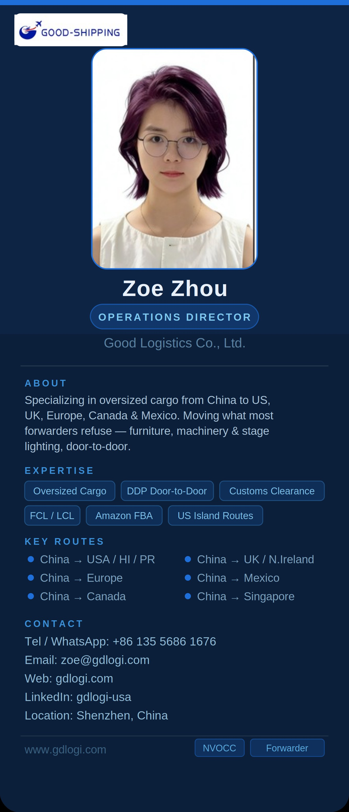

Professional biography
Zoe Zhou is Operations Director at Good Logistics Co., Ltd. in Shenzhen. Based on the provided company author card, her logistics focus includes oversized cargo from China to the United States, the United Kingdom, Europe, Canada and Mexico, with door-to-door movement for furniture, machinery and stage-lighting cargo. Her content is written for importers who need clear shipment requirements, realistic quotation scopes and accountable coordination from supplier pickup through final delivery.
Areas of expertise
Markets and shipment types covered
Confirmed from the provided author card: China to USA, UK, Europe, Canada and Mexico, with focus on oversized cargo, furniture, machinery, stage lighting, DDP door-to-door, FCL/LCL, Amazon FBA and U.S. island routes.
Editorial approach
Zoe’s article topics are designed for overseas buyers who need practical shipment planning rather than generic freight definitions. Drafts were AI-assisted and should be reviewed by Good Logistics for final operational accuracy before formal publication.
Contact
Email: zoe@gdlogi.com
Tel / WhatsApp: +86 135 5686 1676
LinkedIn handle: gdlogi-usa
Location: Shenzhen, China
Articles by Zoe Zhou
- How to Ship Oversized Cargo from China to the USA: A Practical Importer Guide — This pillar guide targets importers with large, heavy or difficult-to-handle cargo and explains the planning details that should be confirmed before booking.
- DDP Shipping from China to the USA: What Should Be Included in a Freight Quote? — This supporting guide helps buyers compare door-to-door DDP quotations and avoid unclear scope, hidden charges and compliance misunderstandings.
- How to Consolidate Products from Multiple Chinese Suppliers Before International Shipping — This supporting guide targets buyers sourcing from several factories and explains consolidation workflow, document control and shipping-plan benefits.